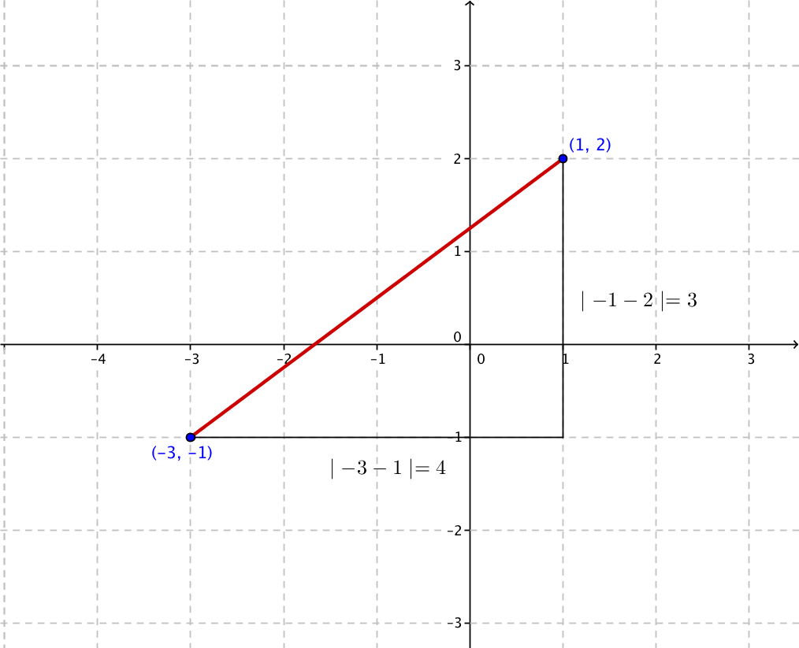
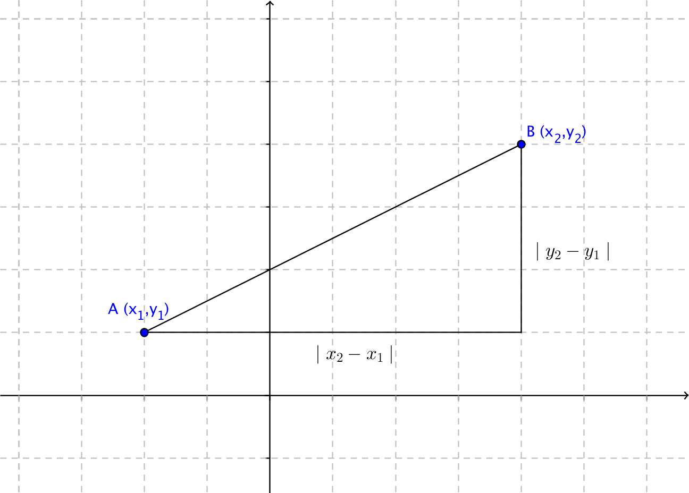

4. Avstånd i koordinatsystem
Bestäm avståndet mellan \( (-3,-1) \) och \( (1,2) \).
Lösning
Sitationen är följande:

Vi får avståndet genom att tillämpa Pythagoras sats. Avstånden bestämmer vi som \( \mid -3 -1\mid = 4 \) och \( \mid -1-2\mid = 3 \). Avståndet blir \( \sqrt{4^2+3^2} = \sqrt{25}=5 \).
Allmänt gäller att vi tar två punkter \( A=(x_1,y_1) \) och \( B=(x_2,y_2) \). Avståndet, \( \mid AB \mid^2 \), får vi via \( \mid x_2-x_1 \mid ^2 + \mid y_2-y_1 \mid ^2 \), som vi skriver som \( \mid AB\mid ^2 = (x_2-x_1)^2+(y_2-y_1)^2 \) som är \( \mid AB \mid = \sqrt{(x_2-x_1)^2+(y_2-y_1)^2} \) .

Exempel 1 Bestäm avståndet mellan \( (-4,1) \) och \( (6,-1) \).
Lösning
Avståndet är, \( \sqrt{(x_2-x_1)^2+(y_2-y_1)^2} = \sqrt{(6-(-4))^2+(-1-1)^2} = 2\sqrt{26} \) l.e.
Exempel 2 Bestäm alla \( x \)-koordinater så att avståndet mellan \( (1,1) \) och \( (x,-4) \) är \( \sqrt{34} \).
Lösning
Vi ställer upp en ekvation. För avståndet, d, gäller
\( \begin{array}{rcll} d & = & \sqrt{(x_2-x_1)^2+(y_2-y_1)^2} \\ \sqrt{34} & = & \sqrt{(x-1)^2+(-4-1)^2} & \mid (\quad)^2\\ 34 & = & (x-1)^2+(-5)^2 \\ 34 & = & (x-1)^2+25 \\ (x-1)^2 & = & 34-25 & \end{array} \)
Om vi vill kan vi naturligtvis lösa denna ekvation med rotformeln.
\( \begin{array}{rcll} (x-1)^2 & = & 9 & \mid \sqrt{\quad} \\ x-1 & = & \pm 3 \\ x & = & \pm3 +1 \\ \end{array} \)
Punkterna är alltså \( (-2,-4) \) och \( (4,-4) \).
Avstånd på GeoGebra
VIDEO
Uppgifter
- Bestäm avståndet mellan följande punkter.
- (-1,2) och (-4,3).
\( \sqrt{(-1-(-4))^2+(2-3)^2} = \sqrt{10} \).
- (4,-5) och (4,1).
\( \sqrt{(4-4)^2+(-5-1)^2} = \sqrt{36}=6 \)
- (2,-4) och (-1,3).
\( \sqrt{(2-(-1))^2+(-4-3)^2} = \sqrt{58} \)
- (-1,2) och (-4,3).
- Bestäm avståndet från origo för följande punkter
- (5,6)
\( \sqrt{(5-0)^2+(6-0)^2} = \sqrt{61} \).
- (1,4)
\( \sqrt{(1-0)^2+(4-0)^2} = \sqrt{17} \).
- (-1,-3)
\( \sqrt{(-1-0)^2+(-3-0)^2} = \sqrt{10} \).
- (5,6)
- Bestäm de punkter på x-axeln som har avståndet 5 till punkten (5,4).
Då punkterna skall finnas på x-axeln betyder det att y-koordinaten har värdet 0.
Vi får ekvationen \( \sqrt{(5-x)^2+(4-0)^2} = 5 \) som har lösningarna \( x=2 \) och \( x=8 \).
Punktern är (2,0) och (8,0).
- För punkten P:s koordinater gäller att x-koordinaten och y-koordinaten har samma värde. Bestäm koordinaten för P då P är på avståndet \( \sqrt{5} \) från punkten (0,-1).
Eftersom punkten P:s koordinater är lika stora kan vi skriva dem som (a,a).
Vi får ekvationen \( \sqrt{(a-0)^2+(a-(-1))^2} = \sqrt{5} \) som har lösningarna \( a=1 \) och \( a=-2 \).
Koordinaterna är (1,1) och (-2,-2).
- Bestäm sidans längd och arean för den kvadrat vars hörnpunkter är (-1,-2), (2,0), (0,3) och (-3,1).
Avståndet mellan två hörnpunkter på kvadraten är \( \sqrt{(-3-(-1))^2+(1-(-2))^2} = \sqrt{13} \). Arean av en kvadrat är \( s^2 \), alltså \( (\sqrt{13})^2=13 \).